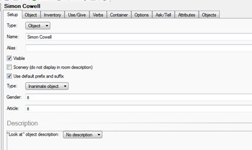
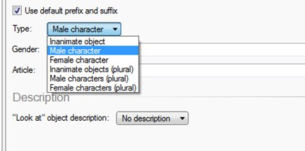
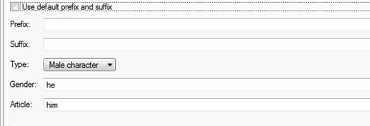
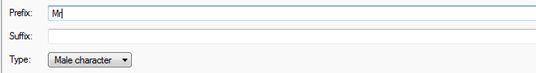

Irritated by “a” in your objects?
‘‘Problem’
In my game I have an object called Simon Cowell but when I run the game it keeps saying “a Simon Cowell”. How do I change this?
Answer
-
Go to the object and Select the Object Tab

-
Click on the Type: drop down and check Male Character

-
Find the Use default prefix and suffix box and untick it:

-
If you want to be more formal, you can click in the Prefix box and type: Mr

-
The suffix box is for things that come after the person’s name – not sure why you would have it apart from maybe writing (high-rise trousers)
-
When you run the game you get this:
-
If you leave it blank and don’t put in Mr you get: